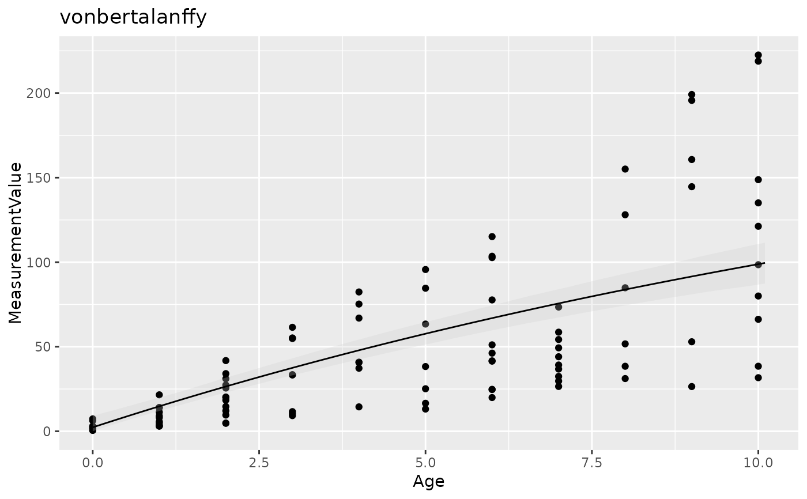
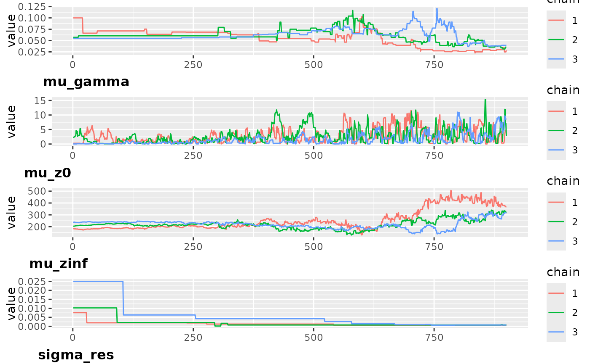

Predictions and plots
Gro_pred.RdGive predicted values of the model and plots to check the convergence of the model
Usage
Gro_pred(data, out, Cred_int = c(0.025, 0.975), title = "")Value
a list including
summaryshomwing mean, standard deviation, credible interval at 95% and the Gelman-Rubin statistics Rhat of each parameter.predictionsgiving the mean estimates and credible interval at 95% of each ageGOF: 4 tests of googness of fit: "normal": test if residuals are normally distributes ; "X"; test if there is a trend between residual and Age, "var": Test if there is the trend in the variance of the residuals over Age ,"conv": check if all Rhat < 1.1plot_predPlot of the predicted values, credible interval at 95% in grey and data points.convergence: Plots of the Bayesian chainsposterior: Plots of the posterior distribution for each parameter
Examples
Age <- sample(c(0:10), 100, replace = TRUE)
AnimalAnonID <- sample(c(0:20), 100, replace = TRUE)
MeasurementValue <- exp(0.2+15 * (1 - exp(-(0.1) * log(Age+1)))+
rnorm(100,0,0.01) + AnimalAnonID*0.1)-1
dat = data.frame(Age = Age, MeasurementValue = MeasurementValue,
AnimalAnonID = AnimalAnonID, MeasurementType = "Live Weight")
out = Gro_analysis(dat,
all_mods = c("vonbertalanffy"),
run = list(nit = 1000, nburnin = 100, nthin = 1, nch = 3))
#> * parallel has been set to FALSE, please wait more !
#> |-------------|-------------|-------------|-------------|
#> |-------------------------------------------------------|
#> |-------------|-------------|-------------|-------------|
#> |-------------------------------------------------------|
#> |-------------|-------------|-------------|-------------|
#> |-------------------------------------------------------|
#> [Warning] There are 44 individual pWAIC values that are greater than 0.4. This may indicate that the WAIC estimate is unstable (Vehtari et al., 2017), at least in cases without grouping of data nodes or multivariate data nodes.
p <- Gro_pred(data = dat,
out = out$model,
title =out$wAIC_tab$model[1])
#> Registered S3 methods overwritten by 'ggpp':
#> method from
#> heightDetails.titleGrob ggplot2
#> widthDetails.titleGrob ggplot2
p$summary
#> mean sd QI 2.5 QI 97.5 Rhat
#> mu_gamma 6.520213e-02 0.016158837 3.866164e-02 0.09563949 1.269016
#> mu_z0 3.245858e+00 3.266516356 5.876789e-02 12.32467360 1.233799
#> mu_zinf 1.834975e+02 34.921295194 1.324161e+02 267.81396283 1.221710
#> sigma_res 3.653177e-03 0.005247518 7.359723e-04 0.01555129 1.340584
p$predictions
#> # A tibble: 102 × 4
#> Age mean Conf_Int_low Conf_Int_up
#> <dbl> <dbl> <dbl> <dbl>
#> 1 0 3.25 0.0588 12.3
#> 2 0.1 4.37 1.25 13.2
#> 3 0.2 5.48 2.39 14.1
#> 4 0.3 6.59 3.52 15.0
#> 5 0.4 7.69 4.63 16.0
#> 6 0.5 8.78 5.73 16.9
#> 7 0.6 9.87 6.82 17.8
#> 8 0.7 10.9 7.90 18.7
#> 9 0.8 12.0 8.98 19.6
#> 10 0.9 13.1 10.1 20.4
#> # ℹ 92 more rows
p$GOF
#> $normal
#> [1] TRUE
#>
#> $X
#> [1] TRUE
#>
#> $var
#> [1] TRUE
#>
#> $conv
#> [1] FALSE
#>
p$plot_pred

p$convergence

p$posterior